attached to it, but the next decade to the left can be switched between stepper D
and stepper E. Set the decade select switch to E

on stepper E
In this tutorial we will be creating a setup to count from 1 to 10, using the
Master Programmer as the means to control the loop. Be sure to begin this turorial
from a blank setup.
| 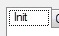 | First be sure you have the Init tab slected on the simulator |
| 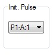 | Connect the Init Pulse to P1-A:1 |
| 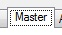 | Now select the Master Programmer by selecting the Master tab |
| Be sure that panel 1 is selected |
The Master Programmer consists of 10 6-stage steppers spread across two panels, 5 steppers
per panel. There are also 20 decades used by the Master Programmer, 10 decades per panel.
| 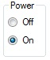 | Be sure that the power to the panel is on |
We will be using stepper E to control our loop. The pulse P1-A:1 will be the beginning of
each loop. This is the pulse that the Go button will produce when pressed.
| 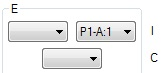 | Set the input of Stepper E to P1-A:1 |
With this connection, each time that Stepper E receives a pulse on P1-A:1 it will emit a
pulse on the output associated with the current stage, which after reset is stage 1. The
output pulse from the stepper will occur in the addition time following the cycle that
the input receives a pulse.
| 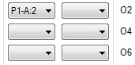 | Connect the output 1 of Stepper E to P1-A:2 |
Each time that the input of a stepper is pulsed, the decades associated with the stepper
will be incremented. Once the terminal value is reached the stepper will change to the
next stage. Now we need to setup the terminal count for stage 1 of stepper E.
| 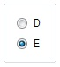 | We need 2 decades for our terminal count. Normally stepper E has only 1 decade attached to it, but the next decade to the left can be switched between stepper D and stepper E. Set the decade select switch to E |
|
Now you can set the terminal count of 10 on the select switches for stage 1 on stepper E |
At this point the Master Programmer is all setup for controlling our loop. Now we just
need to setup what happens during the loop. Stepper E has already been set to output a
pulse on P1-A:2, so we just need to use that pulse to control what happens next.
| 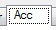 | Select the Accumulator (Acc) tab |
| 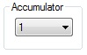 | Be sure that Accumulator 1 is selected |
| Make sure the power to this accumulator is on | |
| 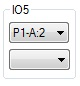 | Set this accumulator program 5 to look for a pulse on P1-A:2 |
| 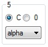 | For this program all we want to do is use the auto-increment function by setting the program to a recieve mode, in this case alpha and then setting the Clear/Correct switch to C |
| 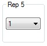 | We only want to count by 1 each time, so make sure the repeat switch is set to 1 |
| 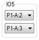 | And lastly connect the output side of IO5 to P1-A:3 |
Our accumulator is now all setup. It will be listening for a pulse on P1-A:2, which
when received will trigger program 5 which will listen for a number on channel alpha,
which is unconnected. With the Clear/Correct switch set to C 1 will be added to the
accumulator at the end of the program. Once program 5 completes a pulse will be sent
out P1-A:3
We will use the pulse on P1-A:3 to trigger the card punch.
| 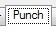 | Select the card punch tab Punch |
| And turn on its power |
Now we need to configure the punch for the job.
| 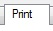 | Select the card print control tab Print |
| Select panel 1 | |
| 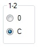 | Set the combine switch for groups 1-2 to C All the other switches should be set to 0 |
| Select panel 2 |
Panel 2 selects which groups get punched. We only want to punch groups 1 and 2, set
all other print groups to Off
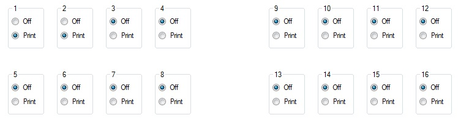
We are almost done. Now we need to add the punch step into our setup.
| Return back to the Init tab | |
| 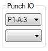 | Connect the pulse input of the Punch to P1-A:3 |
| 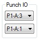 | Connect the pulse output of the Punch to P1-A:1 |
The card punch will be triggered when Accumulator 1 finishes program 5.
After the punch has punched a card it will output the P1-A:1 pulse, which
is the input to Stepper E of the Master Programmer, initiating the next
loop of the setup.
Now to run the setup.
| You should already be on the Init tab, so just press the Clear button |
|
| Followed by the Go button | |
| Switch to the Punch tab |
If you followed all the steps correctly you should get this output:
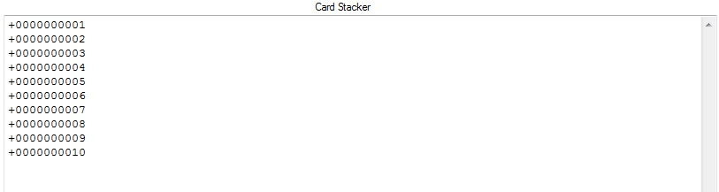
When the setup finishes, stepper E will be at stage 2. If there was more work
to be done at this point, you could use the O2 output from stepper E to
initiate the next part of your setup.